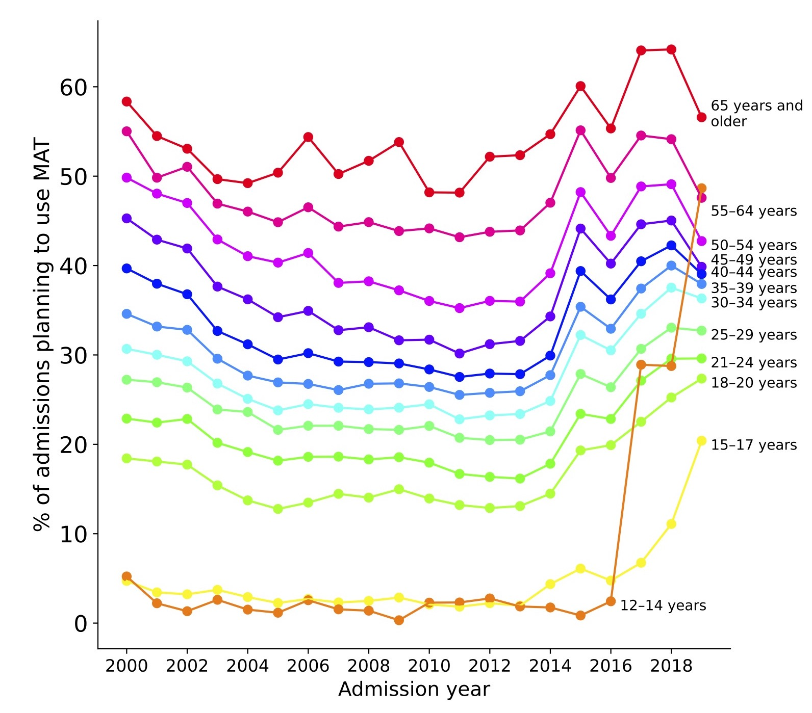
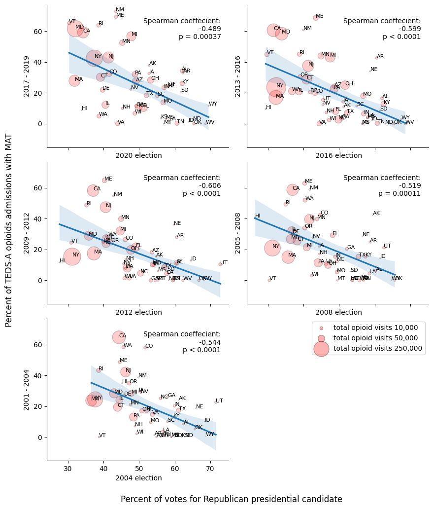
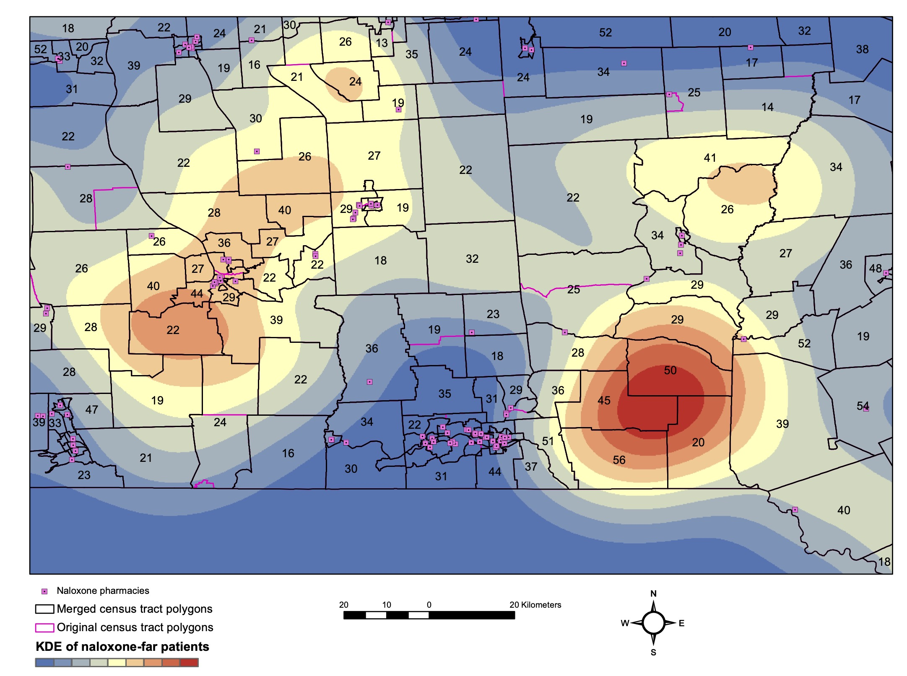

Medications like buprenorphine, methadone, and naltrexone can help patients stay in treatment and avoid relapse. Yet, this evidence-based treatment is often not provided to the patients who need it. I studied the use of medications to treat opiod use disorder in the Treatment Episode Datasets, a group of federal datasets containing 37 million substance treatment encounters. One of the most striking associations I found was for patient age: the younger the patient, the less likely they were to receive medication-assisted treatment.
Another striking trend in medication-assisted treatment for opioid use disorder: where you live is a major factor in the type of care you're likely to receive. Patients being treated for opioid use disorder in Republican-leaning states were less likely to receive medication as part of their treatment plan. This was true across five presidential elections, using treatment data from the four years leading up to each election (up to 2019).
In my paper in JMIR, I explored how the availability of the emergency treatment for opioid overdose, naloxone (brand name Narcan) differs across New York State. Naloxone has been available without a prescription at participating pharmacies in New York State for many years. Unfortunately, I found many regions of New York where there are a lot of people who've experienced an opioid overdose and no participating pharmacy nearby. This is one reason that nalxone needs to be available over-the-counter, so people can buy it online or at any store near them. Fortunately, over-the-counter naloxone was finally approved by the FDA in 2023.
The map below shows a close-up one of the biggest naloxone care gap, found in Broome county. The number of patients with an opioid overdose is labeled in each polygon. Although a number of naloxone pharmacies do exist in Broome county, they are all in the western part, leaving the patients in the eastern area stranded. The density of these naloxone-far patients is highlighted by the kernel density contours in red and blue, with red areas having the greatest density of stranded patients.
